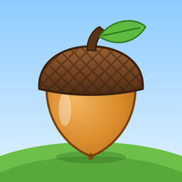

Support
Chipmunk Challenge for iPhone
Get in touch
Found a bug, stuck on a board, or have an idea? Email us and we'll get back to you.
bngroves+chipmunkchallenge@gmail.com
If you're reporting a problem, it helps to include your iPhone model, iOS version, and the level or puzzle you were playing.
Common questions
- How do I play?
- Tap a nest to send its chipmunks to an open holding slot. They clear the blocks of their color from the picture. Clear the whole picture to win. If every slot fills up with nowhere to go, the board is stuck.
- Can I take a move back?
- Yes. Tap Undo to step back, or Restart to start the board over.
- What is the queue?
- When every slot is busy, tapping a nest lines it up. It goes out as soon as a slot opens. Double-tap a queued nest to remove it. You can turn the queue off in Settings.
- When does the Daily Challenge reset?
- At midnight, your local time. Clear it each day to keep your streak going.
- Does my progress carry over to a new phone?
- Progress is saved on your device. It comes along when you restore your iPhone from a backup.
- Does the game need internet?
- No. Chipmunk Challenge plays fully offline.